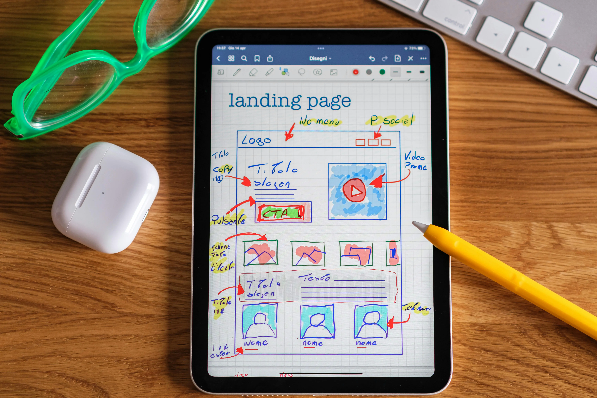

Mastering the Art of Website Design and Development
In today's digital age, a well-crafted website is more than just a virtual presence; it's a pivotal tool for businesses and individuals alike to connect with their audiences. Website design and development encompass a broad spectrum of skills and practices that converge to create engaging, functional, and user-friendly online experiences. Whether you're a seasoned developer or a newcomer to the field, understanding the principles and best practices can significantly impact the success of your digital endeavors.
Understanding the Foundation
At its core, website design and development blend creativity with technical prowess. Design focuses on aesthetics, usability, and visual appeal, ensuring that the website not only looks appealing but also guides users seamlessly through content and actions. Development, on the other hand, involves turning these design concepts into a functional reality using programming languages like HTML, CSS, JavaScript, and more advanced frameworks and tools.
Key Principles of Effective Website Design
Effective website design is grounded in several key principles that ensure a site is user-friendly, aesthetically pleasing, and functional. Understanding and implementing these principles can significantly enhance the user experience, making your website more engaging and efficient.
Simplicity
One of the most critical aspects of effective web design is simplicity. A clean, uncluttered layout helps users navigate your site easily, find the information they need quickly, and focus on the content without distractions. Avoid unnecessary elements that can overwhelm visitors and detract from the main message. Use whitespace strategically to create a balanced and inviting layout.
Consistency
Consistency in design elements such as color schemes, fonts, and button styles across all pages of your site is crucial. This creates a cohesive and professional look, making it easier for users to understand and predict how to interact with your site. Consistent navigation menus and layouts also improve usability by providing a familiar framework for visitors.
Responsiveness
With the increasing use of mobile devices to access the internet, ensuring your website is responsive is more important than ever. A responsive design adapts to different screen sizes and devices, providing a seamless experience whether users are on a desktop, tablet, or smartphone. This includes flexible grids and layouts, images that resize correctly, and touch-friendly navigation elements.
Navigation
Effective navigation is essential for a positive user experience. Your site’s navigation should be intuitive and straightforward, allowing users to find what they need without frustration. This involves using clear labels, logical menu structures, and ensuring important pages are easily accessible from the main menu. Breadcrumbs, search bars, and well-organized footers can further enhance navigability.
Performance
Website performance directly impacts user satisfaction and search engine rankings. A site that loads quickly keeps users engaged and reduces bounce rates. Optimize images, use efficient coding practices, and leverage caching to improve load times. Regularly testing your site’s performance and addressing any issues is essential for maintaining a fast, efficient website.
Accessibility
An accessible website ensures that all users, including those with disabilities, can navigate and interact with your content. This involves using semantic HTML, providing alt text for images, ensuring sufficient color contrast, and enabling keyboard navigation. Following accessibility guidelines not only broadens your audience but also demonstrates social responsibility and compliance with legal standards.
Visual Hierarchy
Creating a clear visual hierarchy helps guide users through your content in a logical flow. This involves using size, color, contrast, and spacing to indicate the importance of elements. Headlines should stand out, call-to-action buttons should be prominent, and important information should be highlighted. A well-structured visual hierarchy makes it easier for users to process information and take desired actions.
Content Quality
High-quality content is the foundation of an effective website. Your content should be relevant, engaging, and valuable to your audience. This includes well-written text, high-resolution images, informative videos, and interactive elements. Regularly updating your content keeps your site fresh and encourages repeat visits. Additionally, integrating SEO best practices into your content strategy helps improve visibility and attract more visitors.
The Development Process
Creating a successful website involves a systematic development process that ensures every aspect of the project is meticulously planned, designed, and executed. This structured approach helps in delivering a functional, user-friendly, and efficient website. The development process typically includes several key phases, each crucial to the overall success of the project. From initial planning and research to wireframing, prototyping, front-end and back-end development, and finally testing and deployment, every step is integral in building a robust and effective website.
- Planning and Research: Understanding the project requirements, target audience, and business goals lays the foundation for a successful website. This phase involves thorough research to gather all necessary information and outline the project scope.
- Wireframing and Prototyping: Creating wireframes and prototypes helps visualize the website's structure and functionality before diving into full-scale development. This stage allows stakeholders to provide feedback and make adjustments early in the process.
- Front-End Development: Front-end developers focus on implementing the visual and interactive elements of the website using HTML, CSS, and JavaScript. They ensure that the website is responsive, visually appealing and works seamlessly across different browsers and devices.
- Back-End Development: Back-end developers focus on server-side logic, databases, and APIs to ensure data is processed and served efficiently. They use popular back-end frameworks such as Node.js, Django and Ruby on Rails to build robust and scalable applications.
- Testing and Deployment: Rigorous testing ensures the website functions as intended across various scenarios, including different devices and user interactions. Deployment involves making the website live, optimizing it for performance, and setting up monitoring to ensure ongoing stability and efficiency. This phase also includes resolving any issues that arise post-launch to maintain a smooth user experience.
Embracing Continuous Improvement
The development process doesn't end with the website's launch. Continuous improvement is essential to keep the website relevant, secure, and effective. This involves regularly updating content, improving functionality, and ensuring the site remains aligned with evolving user needs and business goals. Analyzing user behavior through analytics tools can provide insights into how visitors interact with the site, identifying areas for enhancement. Regular updates also help in keeping the website secure from potential threats by patching vulnerabilities. Implementing user feedback is another crucial aspect of continuous improvement, as it helps in making informed decisions on necessary changes and additions. Additionally, staying updated with the latest design trends and technological advancements ensures the website remains modern and competitive. Continuous improvement fosters a proactive approach, allowing the website to grow and adapt over time. It also helps in maintaining user engagement and satisfaction by offering fresh and relevant content. Ultimately, embracing continuous improvement is about commitment to excellence and ensuring the website consistently delivers value to its users.
Conclusion
Website design and development are not just technical endeavors but creative processes that blend artistry with functionality. By mastering these disciplines and adhering to best practices, professionals can create impactful websites that engage users, achieve business objectives, and leave a lasting impression in the digital realm. Whether you're embarking on your first website project or refining your skills, the journey towards mastering website design and development is as rewarding as it is essential in today's interconnected world.